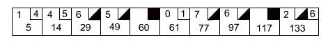

Basically Lather, Rinse, Repeat
“Test-driven development constantly repeats the steps of adding test cases that fail, passing them, and refactoring. Receiving the expected test results at each stage reinforces the programmer’s mental model of the code, boosts confidence and increases productivity.”
A software development process that relies on the repetition of a very short development cycle: first the developer writes a failing automated test case that defines a desired improvement or new function, then produces code to pass that test and finally refactors the new code to acceptable standards.
See: http://en.wikipedia.org/wiki/Test-driven_development
Introducing BDD : http://blog.dannorth.net/introducing-bdd/
Use language/terminology that everyone on the project understands; using a pattern (e.g. Given, When, Then.) to test expected behavior.
“Developers discovered it could do at least some of their documentation for them, so they started to write test methods that were real sentences.”
We will write tests first to author a simple program in JavaScript to score a game of ten-pin bowling. This exercise is based on a 'kata' by Uncle Bob. 1
Note: The code examples in this tutorial will use git diff style indicators, lines with the first charator +/- show an action to add(+) or remove(-) a line of code.
Vagrant development environment provisioned with shell scripts on a (linux/ubuntu) precise64 box. The first time you execute vagrant up the provision scripts will download a linux box "precise64" and install some software needed for a development box. You can edit the provision.sh or scripts in the /bin directory to customize your environment or skip some installations. It may take about 10 minutes to download and install.
cd ~/code/
git clone https://github.com/pixelhandler/vagrant-dev-env ./bowlingkata
cd bowlingkata
git submodule init
git submodule update
vagrant up
Update your /etc/hosts file, add: 192.168.50.4 precise64 the vagrant/virtual box will use http://precise64/ or http://192.168.50.4/ for the www root.
Now you should have /vagrant/www/app and vagrant/www/test directories this is where we will write some code in.

The game consists of 10 frames as shown above. In each frame the player has two opportunities to knock down 10 pins. The score for the frame is the total number of pins knocked down, plus bonuses for strikes and spares.
A spare is when the player knocks down all 10 pins in two tries. The bonus for that frame is the number of pins knocked down by the next roll. So in frame 3 above, the score is 10 (the total number knocked down) plus a bonus of 5 (the number of pins knocked down on the next roll.)
A strike is when the player knocks down all 10 pins on his first try. The bonus for that frame is the value of the next two balls rolled.
In the tenth frame a player who rolls a spare or strike is allowed to roll the extra balls to complete the frame. However no more than three balls can be rolled in tenth frame.
For more info see Ten-pin bowling game Wikipedia article 2 and article for Instructions on scoring with game examples 3
+--------------------+
| Game |
| ------------------ |
| + roll(pins : int) |
| + score() : int |
+--------------------+
Write a class named “Game” that has two methods:
Issue some vagrant and yeoman commands to get started
git checkout -b bowling
vagrant ssh
git config --global user.name "Your Name"
git config --global user.email "me@dom.com"
cd /vagrant/www
yeoman init
# Answer Y/n (make yeoman better), then... n, n, Y (RequireJS), n, N to yeoman.
git add .
git commit -m "yeoman init"
yeoman test
yeoman server
# see http://precise64.dev:3501/
# stop yeoman server with control-c, `exit` (vagrant ssh); or stay in bowlingkata and use vimvim
Edit index.html file in test directory
<script data-main="../app/scripts/main" src="../app/scripts/vendor/require.js"></script>
Edit app/scripts/main.js add `app: 'app', and delete a few lines, all you will need is:
require.config({
- shim: {
- },
-
paths: {
+ app: 'app',
jquery: 'vendor/jquery.min'
}
});
-
-require(['app'], function(app) {
- // use app here
- console.log(app);
-});
Edit file: /test/index.html using this markup:
<!doctype html>
<head>
<meta charset="utf-8">
<meta http-equiv="X-UA-Compatible" content="IE=edge,chrome=1">
<title>Mocha Spec Runner</title>
<link rel="stylesheet" href="lib/mocha/mocha.css">
</head>
<body>
<div id="mocha"></div>
<script src="lib/mocha/mocha.js"></script>
<script>mocha.setup('bdd')</script>
<script src="lib/chai.js"></script>
<script>expect = chai.expect</script>
<script data-main="../app/scripts/main" src="../app/scripts/vendor/require.js"></script>
<script>
require(['../../test/spec/BowlingGame'], function () {
require(['../../test/runner/mocha']);
});
</script>
</body>
</html>
git show c9eab6 (inital setup of main.js and /test/index.html)
cd /vagrant/www/test/spec && touch BowlingGame.js
cd /vagrant/www/app/scripts && touch Game.js
Add code to test/spec/BowlingGame.js
+// Bowling Game specs
+
+describe("Bowling Game Kata", function () {
+
+ describe("Gutter Game", function () {
+
+ it("should score zero", function () {
+ var game = new Game();
+ });
+
+ });
+
+});
git show 739c41 (added failing test for gutter game)
cd /vagrant/www/
yeoman test
You should get a message "Can't find variable: Game"
Add code in app/scripts/Game.js
+define('game', function () {
+ var Game = function () {};
+
+ return Game;
+});
Add game: 'Game' to requirejs config in app/scripts/main.js
require.config({
paths: {
app: 'app',
+ game: 'Game',
jquery: 'vendor/jquery.min'
}
});
Update spec in test/spec/BowlingGame.js adding a require call for the Game constructor
describe("Gutter Game", function () {
it("should score zero", function () {
- var game = new Game();
+ require(['game'], function (Game) {
+ var game = new Game();
+ });
});
});
yeoman test should PASSYou can also visit http://precise64.dev/test/
git show a38d82 (correct error for undefined variable 'Game')
Add an assertion to test/spec/BowlingGame.js
it("should score zero", function () {
require(['game'], function (Game) {
- var game = new Game();
+ var game = new Game(),
+ i = 0;
+
+ for (i; i < 20; i ++) {
+ game.roll(0);
+ }
+ expect(game.score()).to.equal(0);
});
});
Add some stub methods in app/scripts/Game.js
define('game', function () {
var Game = function () {};
+ Game.prototype.roll = function (pins) {
+ if (typeof pins !== 'number') {
+ throw new Error('Game.role() expects `pins` argument to be a number');
+ }
+ };
+
+ Game.prototype.score = function () {
+ return -1;
+ };
+
return Game;
});
yeoman test should FAILYou should get an error message "expected -1 to equal 0"
git show dcd504 (add failing test for gutter game, and stub roll and score methods)
define('game', function () {
- var Game = function () {};
+ var Game = function () {
+ this._score = 0;
+ };
Game.prototype.roll = function (pins) {
if (typeof pins !== 'number') {
throw new Error('Game.role() expects `pins` argument to be a number');
}
+ this._score += pins;
};
Game.prototype.score = function () {
- return -1;
+ return this._score;
};
return Game;
yeoman test should PASSgit show e60494 (pass test for gutter game)
require before 1st describe call // Bowling Game specs
+require(['game'], function (Game) {
describe("Bowling Game Kata", function () {
describe("Gutter Game", function () {
it("should score zero", function () {
- require(['game'], function (Game) {
var game = new Game(),
i = 0;
@@ -13,9 +13,11 @@ describe("Bowling Game Kata", function () {
game.roll(0);
}
expect(game.score()).to.equal(0);
- });
});
});
});
+
+});
git show 699f25 (refactor spec file to add more tests using the Game constructor)
yeoman test should still PASS describe("Gutter Game", function () {
it("should score zero", function () {
- var game = new Game(),
- i = 0;
+ var game = new Game(),
+ i = 0;
- for (i; i < 20; i ++) {
- game.roll(0);
- }
- expect(game.score()).to.equal(0);
+ for (i; i < 20; i ++) {
+ game.roll(0);
+ }
+ expect(game.score()).to.equal(0);
+ });
+
+ });
+
+ describe("Game with every roll only hitting one pin", function () {
+
+ it("should score 20 given each roll hits 1 pin", function () {
+ var game = new Game(),
+ i = 0;
+
+ for (i; i < 20; i ++) {
+ game.roll(1);
+ }
+ expect(game.score()).to.equal(20);
});
});
yeoman test should PASSgit show 80e0fc (add passing test for game with 20 rolls each hitting 1 pin)
Each test instantiates a game object, use a beforeEach method:
describe("Bowling Game Kata", function () {
+ function rollMany(rolls, pins) {
+ var i;
+
+ for (i = 0; i < rolls; i++) {
+ this.roll(pins);
+ }
+ }
+
+ beforeEach(function () {
+ this.game = new Game();
+ });
+
describe("Gutter Game", function () {
it("should score zero", function () {
- var game = new Game(),
- i = 0;
-
- for (i; i < 20; i ++) {
- game.roll(0);
- }
- expect(game.score()).to.equal(0);
+ rollMany.call(this.game, 20, 0);
+ expect(this.game.score()).to.equal(0);
});
});
@@ -20,13 +27,8 @@ describe("Bowling Game Kata", function () {
describe("Game with every roll only hitting one pin", function () {
it("should score 20 given each roll hits 1 pin", function () {
- var game = new Game(),
- i = 0;
-
- for (i; i < 20; i ++) {
- game.roll(1);
- }
- expect(game.score()).to.equal(20);
+ rollMany.call(this.game, 20, 1);
+ expect(this.game.score()).to.equal(20);
});
});
git show fd6098 (refactor spec file to make DRY, add helper functions)
+ describe("Game with one spare", function () {
+
+ it("should score 20 given the first 3 rolls hit 5 pins", function () {
+ rollMany.call(this.game, 2, 5); // roll spare
+ this.game.roll(5);
+ rollMany.call(this.game, 17, 0);
+ expect(this.game.score()).to.equal(20);
+ });
+
+ });
yeoman test should FAILYou should get an error message "expected 15 to equal 20"
git show 1f23ba (add failing test for a game with one spare)
+ // TODO design is wrong, responsibilities are missplaced...
+
+ // TODO roll should not calculate score
Game.prototype.roll = function (pins) {
if (typeof pins !== 'number') {
throw new Error('Game.role() expects `pins` argument to be a number');
@@ -10,6 +13,7 @@ define('game', function () {
this._score += pins;
};
+ // TODO score is not actually calculating value
Game.prototype.score = function () {
return this._score;
};
- describe("Game with one spare", function () {
+ describe.skip("Game with one spare", function () {
git show 150160 (note design error with roll and score Game methods, skip new test for spare)
define('game', function () {
var Game = function () {
- this._score = 0;
+ this._currentRoll = 0;
+ this._rolls = [];
+ this._spares = [];
};
- // TODO design is wrong, responsibilities are missplaced...
-
- // TODO roll should not calculate score
Game.prototype.roll = function (pins) {
if (typeof pins !== 'number') {
throw new Error('Game.role() expects `pins` argument to be a number');
}
- this._score += pins;
+ this._rolls[this._currentRoll++] = pins;
};
- // TODO score is not actually calculating value
Game.prototype.score = function () {
- return this._score;
+ var score = 0, frameIdx = 0;
+
+ for (frameIdx; frameIdx < this._rolls.length; frameIdx++) {
+ if (this._isSpare(frameIdx)) {
+ score += 10 + this._rolls[frameIdx + 2];
+ frameIdx ++;
+ } else {
+ score += this._rolls[frameIdx];
+ }
+ }
+
+ return score;
+ };
+
+ Game.prototype._isSpare = function (frameIdx) {
+ var isSpare = (this._rolls[frameIdx] + this._rolls[frameIdx + 1] === 10),
+ isLastRollSpare,
+ i = 0;
+
+ if (isSpare) {
+ if (this._rolls.length) {
+ for (i; i < this._spares.length; i++) {
+ if (this._spares[i] === frameIdx - 1) {
+ isLastRollSpare = true;
+ }
+ }
+ }
+ if (!isLastRollSpare) {
+ this._spares.push(frameIdx);
+ } else {
+ isSpare = false;
+ }
+ }
+
+ return isSpare;
};
return Game;
The method _isSpare needed some validation to check if a roll is the first roll in a frame with a spare; added a property to keep list of spares, a bowler cannon roll two times in a row and both rolls be a spare.
yeoman test should PASSgit show cfa24a (pass tests for rolling and scoring spares)
Add helper method for testing a strike in test/spec/BowlingGame.js
+ function rollStrike() {
+ this.roll(10);
+ }
Add test for scoring with one strike and two following rolls each hitting 4 pins
+ describe("Game with one strike", function () {
+
+ it("should score 26 given a strike on the 1st roll and 2 following rolls that hit 4 pins", function () {
+ rollStrike.call(this.game);
+ rollMany.call(this.game, 2, 4);
+ rollMany.call(this.game, 17, 0);
+ expect(this.game.score()).to.equal(26);
+ });
yeoman test should FAILYou should get a message "expected 18 to equal 26"
git show 75a1a3 (add failing test for rolling a strike)
Refactor score method, add code to score a strike
for (frameIdx; frameIdx < this._rolls.length; frameIdx++) {
- if (this._isSpare(frameIdx)) {
+ if (this._isStrike(frameIdx)) {
+ score += this._scoreStrike(frameIdx);
+ } else if (this._isSpare(frameIdx)) {
score += 10 + this._rolls[frameIdx + 2];
frameIdx ++;
Add method to check if a roll is a strike; add a method to score the frame value for a strike
+ Game.prototype._isStrike = function (frameIdx) {
+ return (this._rolls[frameIdx] === 10);
+ };
+
+ Game.prototype._scoreStrike = function (frameIdx) {
+ var score = 0, i = 1, bonusFrames = 2;
+
+ if (frameIdx <= 9) {
+ score += 10;
+ for (i; i <= bonusFrames; i++) {
+ if (this._rolls[frameIdx + i]) {
+ score += this._rolls[frameIdx + i];
+ }
+ }
+ }
+
+ return score;
+ };
+
return Game;
yeoman test should PASS both cases for rolling a spare and Pass for scoring a strikegit show 07d79c (pass test for rolling and scoring a strike)
+ describe("Perfect game", function () {
+
+ it("should score 300 for with 12 strikes in a row", function () {
+ rollMany.call(this.game, 12, 10);
+ expect(this.game.score()).to.equal(300);
+ });
+
+ });
yeoman test should PASSAs a sanity check, test a complete game with all kinds of rolls
+ describe("Beginner's Game", function () {
+
+ it("should score 110", function () {
+ var game = this.game;
+
+ // frame 1, score: 9
+ game.roll(7);
+ game.roll(2);
+ // frame 2, score: 16
+ game.roll(6);
+ game.roll(1);
+ // frame 3, score: 26 + 3 = 29
+ rollSpare.call(game);
+ // frame 4, score: 36
+ game.roll(3);
+ game.roll(4);
+ // frame 5, score: 46 + 10 = 56
+ rollSpare.call(game);
+ // frame 6, score: 66 + 5 + 3 = 74
+ rollStrike.call(game);
+ // frame 7, score: 82
+ game.roll(5);
+ game.roll(3);
+ // frame 8, score: 87
+ game.roll(5);
+ game.roll(0);
+ // frame 9, score: 95
+ game.roll(6);
+ game.roll(2);
+ // frame 10, score: 105 + 5 = 110
+ game.roll(7);
+ game.roll(3);
+ game.roll(5);
+ });
+
+ });
yeoman test should PASSgit show d4f863 (add a sample game test that should score 110, it passes)